Fixing GIS Data Discovery
Introducing GeoBlacklight
Jack Reed / @mejackreed
Stanford University Libraries

What is the hardest part of GIS work?
[please don't say projections]
Finding the data
One of the biggest problems for Code for America projects is getting access to the data.
@lyzidiamond | Code for America
Getting the data should be simple
But it requires a lot of domain knowledge
We are all guilty

We treat GIS data in an ephemeral manner
We need to treat them like durable assets
Why should I care?
$$$
[insert altruistic open data reasons]
$$$
I really want to just start writing code...
Design!
Hours of user interviews
Students, instructors, researchers, experts, librarians, government agencies
Environmental scan
Development of a metadata schema
GeoBlacklight-Schema
Hardy, D., K. Durante. 2014. A Metadata Schema for Geospatial Resource Discovery Use Cases. code4lib 25.
Complimentary to other projects:
- reusing a controlled vocabulary from the FOSS4G CatInterop project
- crosswalk from ISO 19115/19139 and FGDC (and ArcGIS)
- conversion from OpenGeoportal Metadata
Rapid prototyping
Finally... I get to write some code
http://geoblacklight.stanford.edu

What did we learn?
Users are frustrated with finding data
- "When I do find it, I can't download it"
- "Why can't I do X?"
- "Why would I ever use X software?"
- "Is it supposed to work like this?"
Current software offerings don't match institutional objectives
Spatial search is important for spatial data
Focus on discovery
Leave out analysis
End user features
Stakeholder features
GeoHydra - Geospatial MetaData ToolKit for use in Hydra
GeoBlacklight - a discovery application for geospatial data [alpha prototype]
GeoMonitor - a WMS/WFS monitoring application [ just rolled out to production]
GeoBlacklight Schema - a Solr schema designed for geospatial discovery